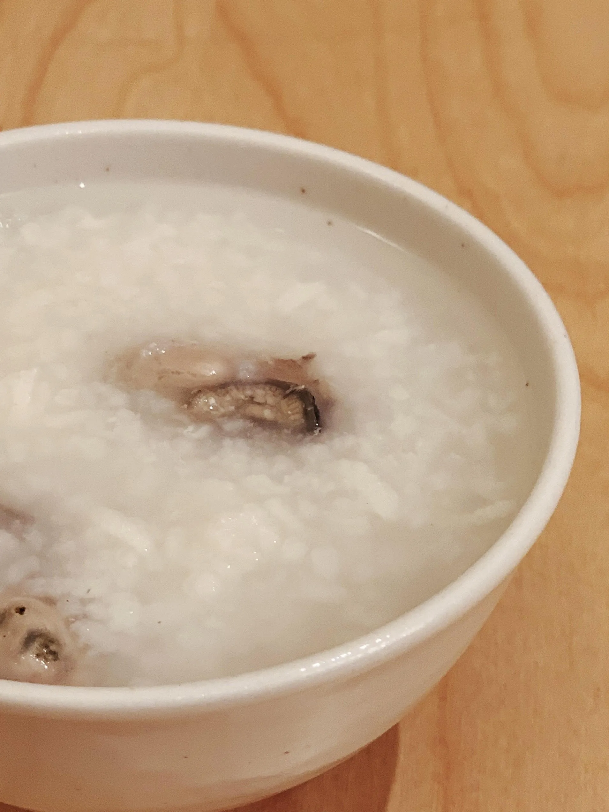
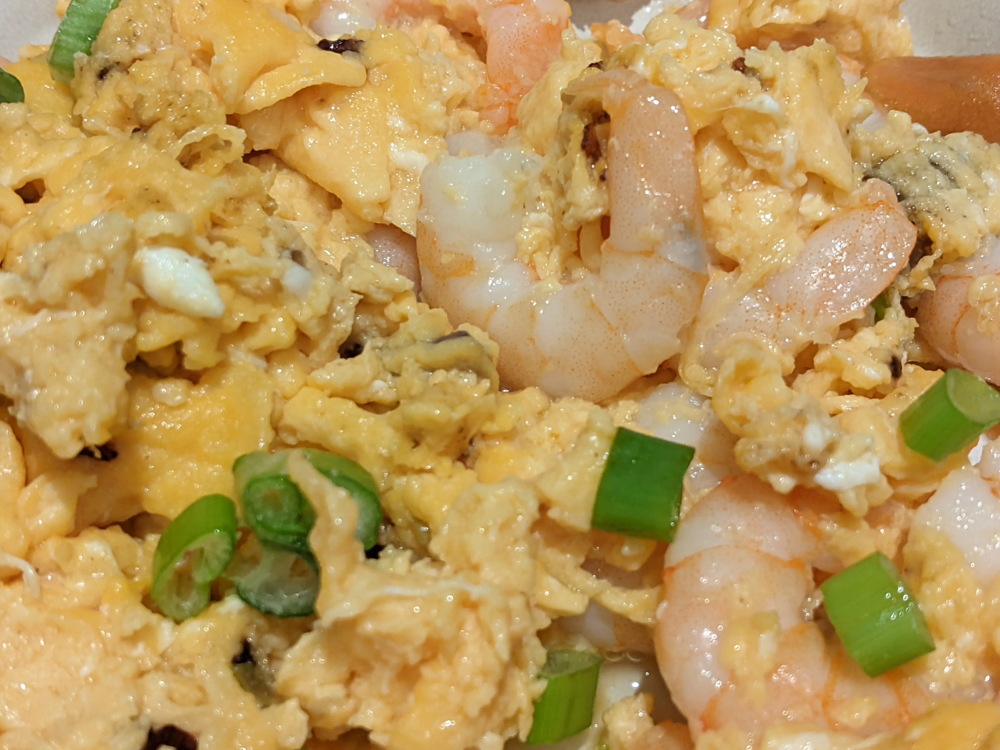
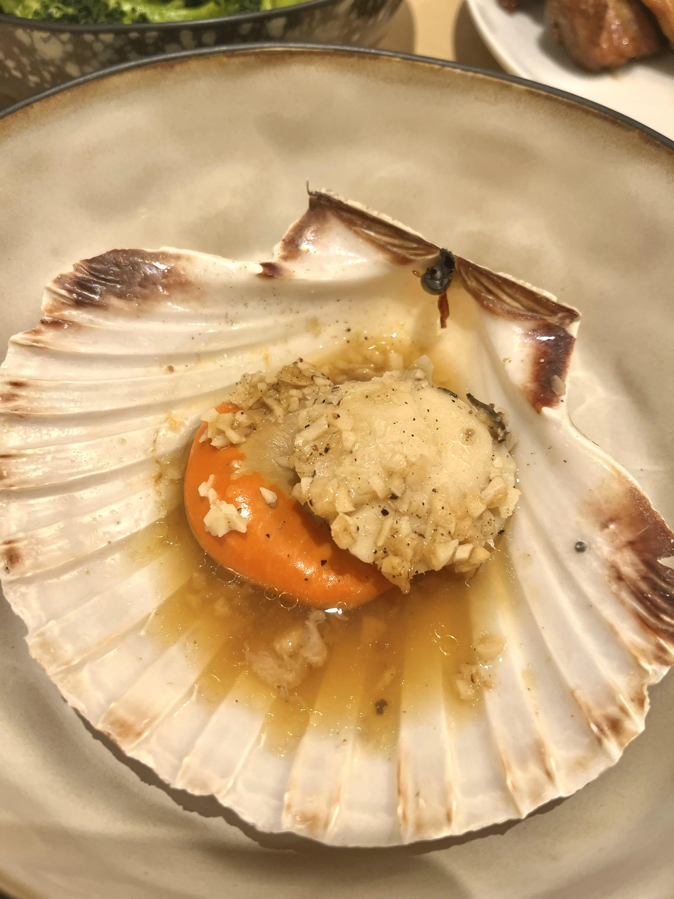
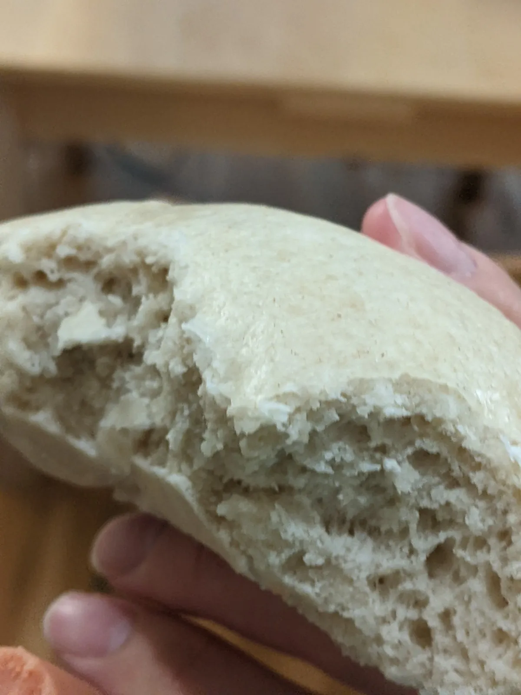
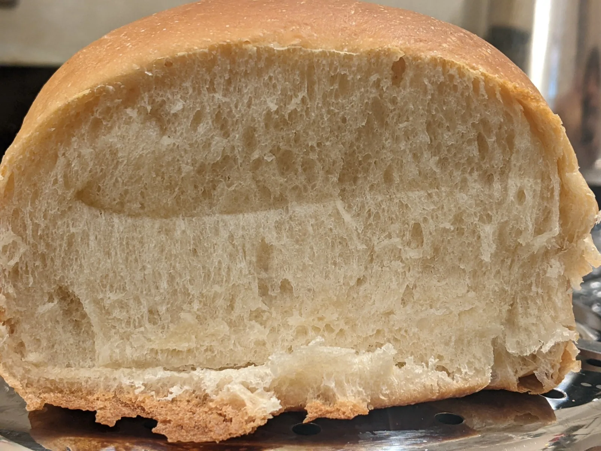
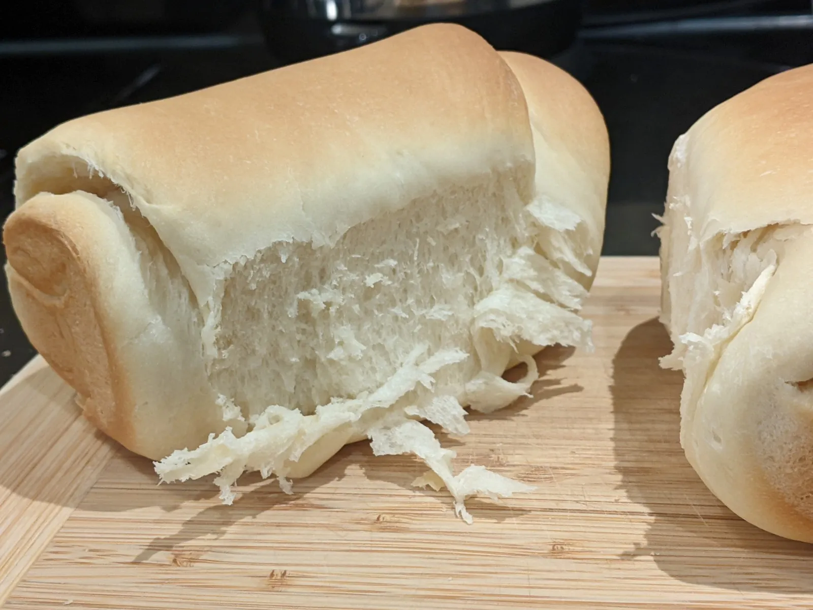
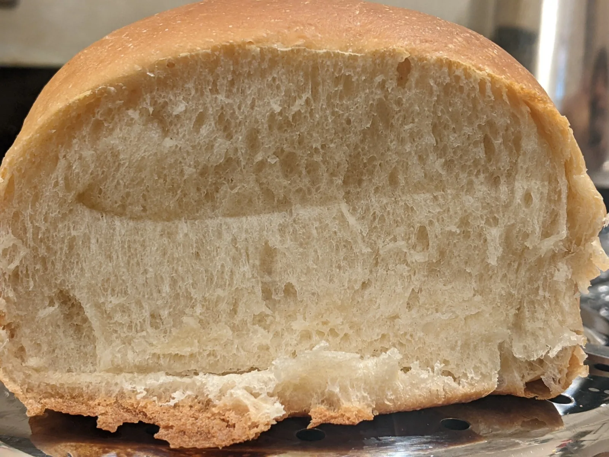
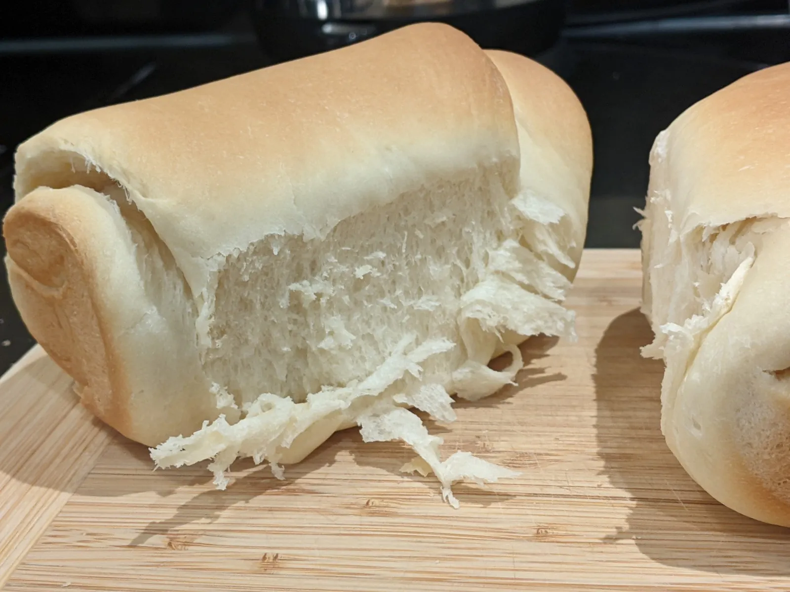

Cooking Photos
I love to cook!
Breakfast - 早餐类



Starter - 前菜
Spanish Omelette - 西班牙烘蛋
Beef, Potato And Tomato Soup - 罗宋汤
Main - Meat - 肉类
Sweet and Sour Chicken - 咕噜肉
Stewed Pork Ribs With Sauekranut - 酸菜炖排骨
Stir Fry - 杂炒

Koushui Chicken - 口水鸡
Beer Chicken - 啤酒鸡

Japanese Curry - 日本咖喱

Pork With Red Beans Soup - 赤小豆猪肉汤

Braised Pork Rice - 卤肉饭

Burger - 汉堡


Handmade Pizza - 比萨饼
Dumplings - 饺子
Potato with Duck - 土豆闷鸭

Sour Pickled Mustard With Fish - 酸菜鱼

Char Siew with Honey Sause - 蜜汁叉烧
Ginger's drawing

梅菜蒸肉饼

鱼香茄子

Korean Doenjang Jjigae - 大酱汤

Duck Confit - 油封鸭
Sicuan Chili Chicken - 钵钵鸡
Chicken Wing With Coca Cola Curry - 可乐鸡翅
Homemade Fry Chicken and Chips - 炸鸡薯条

Main - Seafood - 海鲜类
Squid Ink Pasta - 墨鱼汁意面

Egg Fried Prawn - 虾仁炒蛋

Fish Soup - 鱼汤

Fried Clams - 爆炒花甲

Cantonese Steamed Fish - 广式蒸鱼

Steam Fish With Chopped Chili - 剁椒鱼柳

Garlic Scallop - 蒜蓉扇贝

Vegetables - 蔬菜类
Marbled Tea Eggs - 茶叶蛋
Deep Fried Eggs - 炸蛋
Tomato With Egg - 番茄炒蛋
Padrón Peppers - 西班牙小辣椒

干锅花菜

干煸豆角肉末

Fermented Bean Curd With Morning Glory - 腐乳通菜心

Sicuan Chili Tofu - 麻婆豆腐

Spiced Mashed Potato - 老奶洋芋

Dessert - 点心
Homemade Cookies - 曲奇

Chang Fen - 肠粉
Sweet Rice Cake - 伦教糕

Carrot Cake - 萝卜糕

Rice, Noodle, Porridge - 主食
Man Tou - 馒头

Japanese Bread
 



Handmade Noodle - 手工面

炒米粉

Bibimbap - 韩国拌饭

Beef Noodle - 牛肉面
Pho - 越南面


Cream Curry Udon - 咖喱奶油乌冬面

Oyster Porridge - 蚝粥
Drinks - 饮品
Cold Brew On Rock - 冷萃咖啡
Mulled Wine - 热红酒